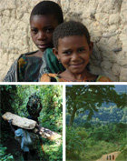

Eastern Arc Mountains
Tanzania Brochure
- 
- A brief overview of the work the Natural Capital Project has done with the Valuing the Arc Project in Eastern Africa (Download pdf)
InVEST Scenarios Case Study: Eastern Arc Mountain, Tanzania
-

- An overview of how scenarios were used for land-use decision making in Tanzania (Download pdf)
Life-Support Systems
- Hydropower: At least 50% of the electricity used in Tanzania comes from hydropower stations along rivers flowing from the Eastern Arc Mountains.
- Drinking Water: 10-25% of Tanzania's drinking water comes from rivers flowing from the Eastern Arc Mountains. The Ruvu River is the main source of drinking water for Dar es Salaam's 3 million residents.
- Non-timber Forest Products: The Eastern Arc forests are the major source of firewood, building poles, wild vegetables, bushmeat, and medicinal plants for people living in the mountains. Hundreds of thousands of people rely on these products for energy, housing, and cash income.
- Biodiversity: It's estimated that there are over 2,000 plant species in the Eastern Arc Mountains and surrounding forests. At least 550 of these species are believed endemic to this region. The mountains are also home to nearly 100 endemic vertebrates.
- Ecotourism: The Eastern Arc's pleasant climate, nurtured by winds from the Indian Ocean, provides exceptional beauty and rare wildlife, including dozens of birds, chameleons, tree frogs, and other species found nowhere else. These features draw tourists to the mountains from all over the world. Researchers at Valuing the Arc are developing modules to understand the magnitude of current nature-based tourism and its economic value to the region.
Ecosystem Services in the Eastern Arc Mountains of Tanzania
Valuing the Arc
From 2007 to 2011, the Natural Capital Project collaborated in Valuing the Arc to analyze threatened ecosystem services and develop measures to conserve their value to people in the Eastern Arc Mountains. Valuing the Arc was a research and policy program working to improve knowledge of the ecosystem services provided by the Eastern Arc Mountains of Tanzania, of their contribution to human welfare, and to find solutions to managing these services in a sustainable way. In doing so, this research aimed to provide critical information to policy-makers in Tanzania and contribute to the wider field of ecosystem services research.
The major goal for this demonstration site was to provide a scientific basis for new programs in which local residents can receive payments for maintaining natural assets, such as forests that regulate water supplies. To support these efforts, a team of Tanzanian, British, South African, and American researchers calculated and maped the remnant forest’s economic value to Tanzania’s citizens and others, and to show the economic consequences of different policy options.
The program of work, as a whole, was focused on quantifying, mapping and valuing the key ecosystem services that flow from the Eastern Arc Mountains. This comprises a number of modules:
- Hydrological services
- Carbon-related services
- Timber services
- Non-timber forest product (NTFP) services
- Nature-based tourism services
- Conservation costs
- Governance of natural resources
- Biodiversity priorities and existence values
The Eastern Arc Mountains

The Eastern Arc is a chain of ancient mountains covered by rain forests and grasslands in Tanzania and Kenya. Scientists believe that the forest has survived on the Eastern Arc Mountains for over 30 million years, and were once connected to the forests of the Congo Basin and West Africa. Neighboring mountains are much younger, for example Kilimanjaro is estimated to be about 1-2 million years old.
At least 200 vertebrates are of conservation concern and around 500 plant species are strictly endemic to these mountains. These are mainly found in the forest habitats. Estimates suggest that more than 70% of the original forest cover has been destroyed and only about 4,000 sq km of forest remain on the mountains. Most of the forest has been lost in the past 100 years due to conversion to farmland, unsustainable timber harvesting and uncontrolled fires.
Conserving these forest habitats is very important for the global community and for the people of Tanzania. Most of the remaining forests are within government forest reserves. These government forest reserves are poorly funded and have few staff, however they provide the mainstay for conservation in the area. Since 1998 local people often supported by civil society organizations have been increasingly involved in the management of the Eastern Arc forests.
For further information see www.easternarc.or.tz.
Related Projects - Valuing Ecosystems in the Virungas Landscape
The Albertine Rift Conservation Society (ARCOS) Network used InVEST outputs to garner government and stakeholder support for ecosystem service and biodiversity conservation in the Virungas landscape, which covers significant areas of Uganda, Rwanda and Democratic Republic of Congo. Their project involved quantifying and valuing ecosystem services and examining tradeoffs between a 'Business as Usual' (BAU), 'Green', and 'Market-driven' scenarios. They also worked to promote new incentives for conservation using economic valuations of important ecosystem services.
The ARCOS network promotes collaborative conservation action and information-sharing across the entire Albertine Rift, stretching through six countries in east and central Africa and housing thousands of unique plants and animals. Its work preserving key ecosystems has earned the organization a 2012 MacArthur Award for Creative and Effective Institutions.
Partners
Valuing the Arc ws an international, collaborative, research program, involving experts from: five UK-based universities (University of Cambridge; University of East Anglia; University ofYork; University of Leeds; and, Cranfield University); two Tanzanian universities (University of Dar es Salaam and Sokoine University of Agriculture); the WWF Tanzania Programme Office; and, the Natural Capital Project in the USA, through WWF-US. It was funded by the Leverhulme Trust and the Packard Foundation. This partnership began with a November 2006 workshop in Dar es Salaam, attended by experts in the science and conservation of environmental services from seven countries. We worked together, analyzing five services including water supply, carbon storage and sequestration, ecotourism, non-timber forest products and timber.
Publications
Measuring, Modeling and Mapping Ecosystem Services in the Eastern Arc Mountains of Tanzania
Fisher, Brendan; R. Kerry Turner; Neil D. Burgess; Ruth D. Swetnam; Jonathan Green; Rhys E. Green; George Kajembe; Kassim Kulindwa; Simon L. Lewis; Rob Marchant; Andrew R. Marshall; Seif Madoffe; P.K.T. Munishi; Sian Morse-Jones; Shadrack Mwakalila; Jouni Paavola; Robin Naidoo; Taylor Ricketts; Mathieu Rouget; Simon Willcock; Sue White; Andrew Balmford
Progress in Physical Geography. October 2011, Vol. 35(5): 595-611.
Eastern Arcs, Tanzania Site Brochure
InVEST Scenarios Case Study: Eastern Arc Mountain, Tanzania
Valuing the Arc Fact Sheet (WWF 2008)
Additional Publications and Research from the Valuing the Arc Project (2007-2011)
Contact
Taylor Ricketts
Gund institute for Ecological Economics
University of Vermont